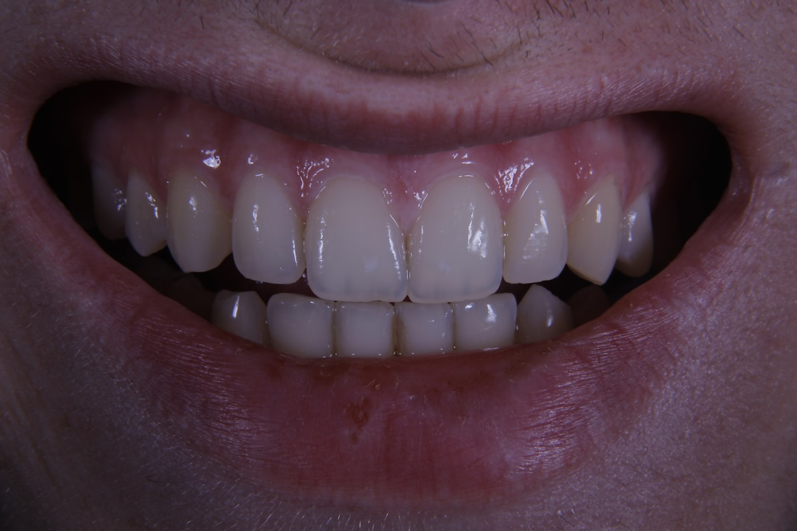
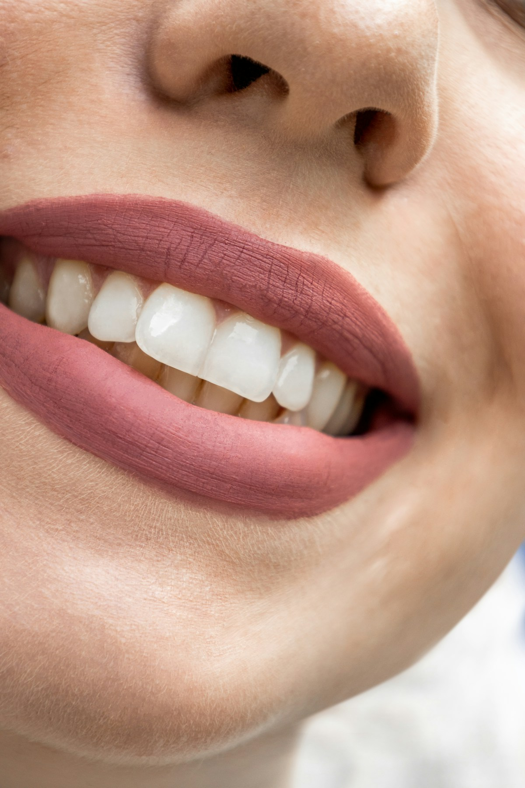

🔴 MAQUETA. Los tres testimonios son PROVISORIOS y los trae Cecilia. 🔴 Esta versión lleva el par antes/después, que NO va en la landing — decidido por Juan el 8-sep-2026: va en la página por tratamiento, donde el paciente ya buscó ese tratamiento. Además, el «antes» y el «después» son DOS BOCAS DISTINTAS de banco y no se publican.
«Hacía cuatro años que no pisaba un consultorio de puro miedo. Me explicó todo antes de tocarme y paramos cuando lo necesité.»
«Me dijo cuántas sesiones eran y cuánto salía antes de empezar. No apareció ningún costo que yo no supiera.»
«Vengo con mis dos hijos. Los turnos son a la hora que dice y el instrumental lo abre delante nuestro.»


Blanqueamiento y dos restauraciones en las caras de adelante. Tres sesiones. Caso propio, publicado con autorización del paciente.